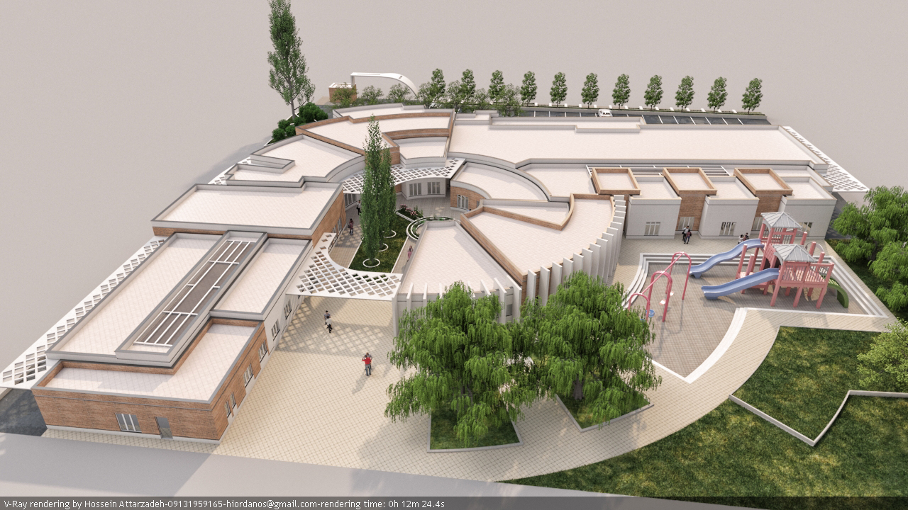

Autism Center Design
Spaces for education, therapy, and counseling are designed to reduce sensory and behavioral disturbances in children.
Spaces for education, therapy, and counseling are designed to reduce sensory and behavioral disturbances in children.
A pedestrian-oriented urban space with balanced proportions, brick arches, tilework, greenery, and a central water basin.
Designed with central floral motifs and red-blue tones, featuring fine three-weft weaving and natural, high-quality materials.
Competition to design the Khajeh Khezr neighborhood with 15 people in a group.

A native-inspired administrative-commercial project reflecting the essence of Iranian traditional architecture and cultural heritage.
Competition project focusing on neighborhood planning through urban infrastructure and public space design.

A climate- and topography-responsive landscape design that transforms natural slope and rainfall into functional, aesthetic, and sustainable features.
Hand-drawn sketches created with a variety of artistic techniques, each reflecting unique expressions of form, texture, and architectural character.